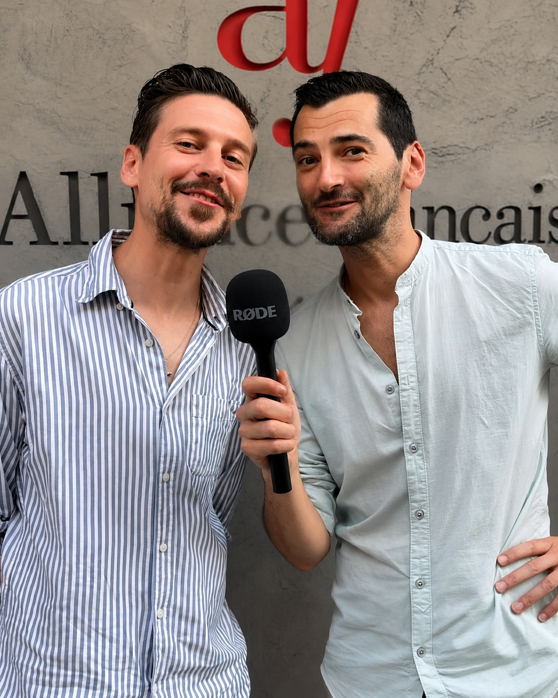

At the Alianza Francesa de Málaga, I built and ran a set of content pillars: recurring video formats designed to move the school's image away from pure promotion and toward something more human, showing the daily life at the Alianza and the events it hosts.
I quickly noticed that the school's existing promotional posts were losing traction, so I shifted toward video formats that put real people on screen. Working alone, I had to be genuinely organized: I built and managed an editorial calendar, planned content in advance based on upcoming events, and made deliberate choices about which formats to prioritize when time was tight, sometimes reducing the frequency of one pillar to focus on another.
Managing several formats solo taught me the value of focus: it's not about doing everything or following every trend, but about choosing a strong base of content types and doing them well. I also learned to prioritize by impact, knowing that some content (like a paid campaign) directly drives enrolments, while other formats build long-term trust and visibility. That distinction now shapes how I approach any new content strategy.